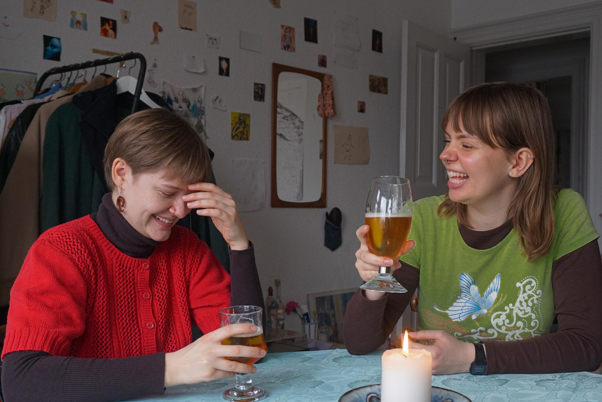
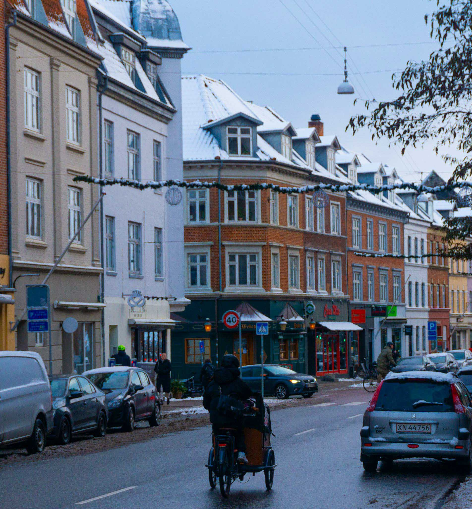

I år har vi lagt et stort fokus på udviklingen af vores alkoholfri øl.
Derfor har vi i år lanceret en ny linje af alkoholfri øl, som er det ULTIMATIVE valg til alle sæsonernes begivenheder
Læs mere om alkoholfri øl her